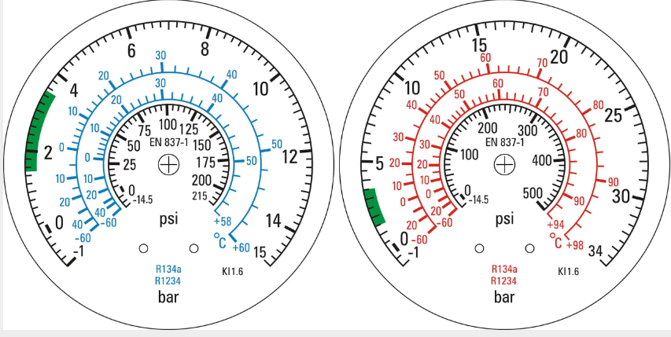

Thème / DomaineBraser, raccorder les organes, poser les manomètres
Module atelier A2-c · 4 hFin de la ligne liquide, pose complète des manomètres, relevé des pressions et préréglage au banc
SéquenceS11 · sem. 6 · 06/10/2026 (matin)
Nom________________
Prénom________________
Date________________
Positionnement01234
Mise en situation professionnelle
La ligne liquide a été brasée (module A2-a) puis équipée de ses premiers manomètres (module
A2-b). Ordre d'intervention n° OI-2026-S11-03 : le client demande aujourd'hui de terminer la ligne
liquide, de compléter la pose des manomètres restants, de relever les pressions BP et HP
après mise sous pression contrôlée, puis de préparer le préréglage des consignes de régulation. Cette
dernière étape se fait au banc, hors tension et hors fluide : aucune mise en service aujourd'hui.
Ligne liquide équipée — schéma réduit pour le repérage. Le schéma complet figure en annexe A3 paysage en fin de document.
Tâches
T11 Contrôler les circuits hors fonctionnement T14 Régler l'installation en fonctionnement
Savoirs
S5.2 Fluides frigorigènes, huiles prérequis S6.1 Santé et sécurité au travail prérequis S5.6 Réseaux, matériels électriques et de régulation nouveau S5.1 Systèmes thermodynamiques à détente directe augmenté
Confortement→ÉvaluationC4.5 Mesurer, comparer des grandeurs DécouverteC4.6 Paramétrer ou régler les valeurs de consigne sur organe de régulation/sécurité
Objectifs — je serai capable de…
terminer les brasures et raccordements restants de la ligne liquide et compléter la pose des manomètres BP/HP ;
relever, après mise sous pression contrôlée, les pressions BP et HP et lire la double graduation (pression↔température) ;
observer un écart entre température lue et température de saturation, sans en faire le calcul détaillé ;
préparer un préréglage de consigne sur un organe de régulation, au banc, hors tension et hors fluide.
Prérequis — je sais déjà…
lire un manomètre à double graduation pression↔température (S5.2, acquis au module A2-b) ;
convertir une pression en température de saturation à l'aide de la table du fluide (module A2-b) ;
respecter les consignes de sécurité de l'atelier (S6.1) sans rappel ;
nommer les organes de la ligne liquide (filtre déshydrateur, voyant liquide, détendeur).
Si vous ne cochez pas tous ces prérequis, prévenez le professeur avant de commencer : un rappel court est possible pendant l'exercice au fil de l'eau (phase 4), mais jamais pendant la démonstration de mise sous pression.
Exercice au fil de l'eau — lecture de manomètres (pendant le passage en tenue)
Pendant que vous attendez votre tour pour vous changer, lisez le poste de
manomètres BP/HP ci-dessous (cadrans réalistes EN 837-1, fluide R-134a) et notez la pression lue sur
chaque cadran ainsi que la température de saturation correspondante, sur l'échelle intérieure du bon
fluide.

À gauche : manomètre BP · à droite : manomètre HP · échelle extérieure noire = pression (bar) · échelle intérieure bleue/rouge = température de saturation pour R-134a/R-1234 · la zone verte indique la plage de fonctionnement normal.
P0 — manomètre BP (bar)
T0 (°C, échelle R-134a)
PK — manomètre HP (bar)
TK (°C, échelle R-134a)
Matériel
Ligne liquide brasée et partiellement équipée (modules A2-a et A2-b) (× 1 par poste)
Chalumeau oxyacétylénique complet + bouteille d'azote et détendeur BP (× 1 par poste, sous surveillance professeur, pour les raccords restants)
Baguettes de brasure argent ou cuivre-phosphore selon consigne du professeur (consommable)
Manomètres BP/HP restants à poser + raccords de service (× 1 jeu par poste)
Vanne et dispositif de mise sous pression contrôlée (azote ou fluide selon consigne du professeur) (× 1 par poste)
Fiche de sécurité à cocher (permis de feu pour la finition des brasures) (× 1 par poste)
Fiche d'auto-contrôle qualité de brasure (rappel module A2-a) (× 1 par poste)
Fiche de contrôle croisé binôme à binôme, pose des manomètres (× 1 par poste)
Table de conversion pression → température de saturation (× 1 par élève)
Banc de réglage hors tension et hors fluide, avec organe de régulation/sécurité à préréglage (× 1 par poste)
Fiche de préréglage de consigne (× 1 par poste)
Lunettes de protection teintées brasage, gants cuir, tablier ignifugé (rappel module A2-a, pour la finition des brasures)
Carnet de bord + bon de commande hebdomadaire (module F3) + crayon
EPI, risques, gestes interdits et urgence
⚠ Mise sous pression contrôlée, aucune mise sous tension aujourd'hui — le
module comporte trois activités bien distinctes : finir des brasures (mêmes règles qu'au module A2-a), poser
des manomètres restants puis relever des pressions sous mise sous pression contrôlée et sécurisée, et
préparer un préréglage au banc, hors tension et hors fluide. Aucune installation n'est mise en service
ce jour.
Risque
Parade / EPI
Brûlure par flamme ou par le cuivre chauffé (finition des brasures)
Gants cuir, tablier ignifugé, lunettes teintées brasage obligatoires. Permis de feu visé par le professeur avant toute flamme. Laisser refroidir avant de toucher un raccord.
Oxydation interne pendant la finition des brasures
Balayage d'azote obligatoire, comme au module A2-a.
Blessure lors de la pose des manomètres restants
Vannes de service fermées avant raccordement, pas de purge brutale, contrôle croisé binôme à binôme.
Projection ou éclatement lors de la mise sous pression
Montée progressive et contrôlée, jamais brutale. Zone dégagée, lunettes de protection, professeur présent qui valide chaque étape avant d'ouvrir la vanne.
Choc électrique ou coup de bélier au banc de réglage
Toujours vérifier que le banc est hors tension et hors fluide avant toute manipulation de l'organe de régulation. Ne jamais brancher une alimentation pendant le préréglage.
Poste de brasage abandonné flamme allumée
Ne jamais quitter un poste flamme allumée, même quelques secondes.
Gestes interdits aujourd'hui : jamais de flamme sans permis de feu visé ;
jamais de mise sous pression sans validation du professeur ; jamais de réglage d'un organe de sécurité
sous tension ou sous pression ; jamais de mise en service d'une installation ; ne jamais quitter un
poste de brasage flamme allumée.
🚨 En cas d'incident — pour un incident de brasage : couper l'arrivée
de gaz aux bouteilles, utiliser l'extincteur localisé, alerter immédiatement le professeur. Pour une
brûlure : refroidir sous le point d'eau localisé puis prévenir le professeur. Pour une fuite ou un
bruit anormal pendant la mise sous pression : fermer la vanne immédiatement, alerter le professeur.
Au banc de réglage : en cas de doute sur l'état hors tension/fluide, arrêter et appeler le professeur
avant toute manipulation.
OBSERVER — une courte amorce avant de passer à l'atelier
Le professeur vous montre un seul couple de valeurs déjà relevé sur une
installation : une pression lue au manomètre, convertie en température de saturation, et une
température réelle mesurée au même endroit au thermomètre de contact.
Observation — La température réelle est-elle la même que la
température de saturation lue en face de la pression, ou y a-t-il un écart ?
Ce que vous devez retenir aujourd'hui
Il existe un écart entre la température réelle mesurée sur le circuit et la
température de saturation donnée par le manomètre. Cet écart a un nom et il se mesure : on l'appelle
surchauffe côté aspiration (BP) et sous-refroidissement côté liquide (HP). La surchauffe et
le sous-refroidissement sont définis et quantifiés au module théorie T2 : aujourd'hui, vous vous
contentez de repérer que cet écart existe. Retenez seulement, comme repère à approfondir en T2 : une
surchauffe se situe en général entre 5 et 10 K, un sous-refroidissement entre 4 et 8 K — toute
autre valeur rencontrée en atelier reste « selon plaque/notice, à faire valider ».
Terminez maintenant la ligne liquide et complétez la pose des manomètres : c'est
sur ce montage terminé que vous ferez tout à l'heure votre propre relevé de pressions.
Réalisation — jalon 1 : finition de la ligne liquide et manomètres
JALON 1 — ≈ 1 h 05
Terminez les brasures et raccordements restants, sous les mêmes règles de
sécurité qu'au module A2-a : permis de feu visé, EPI complets, balayage d'azote pendant toute la durée
du chauffage. Complétez ensuite la pose des manomètres BP/HP restants, hors pression.
☐ 1. Faire viser le permis de feu par le professeur avant toute flamme
OBSERVER — la démonstration de mise sous pression contrôlée
La mise sous pression est un geste à risque : elle se démontre, elle ne se
découvre pas seul. Le professeur réalise devant vous une mise sous pression contrôlée complète, de
l'ouverture progressive de la vanne à la lecture des manomètres. Observez sans toucher, avant de
répondre.
Observation — Le professeur ouvre-t-il la vanne d'un coup ou
progressivement ? Que vérifie-t-il avant chaque augmentation de pression ?
Lecture d'un manomètre après mise sous pression — BP en bleu, HP en rouge. Chaque cadran porte une double graduation : la pression en bar, et en face, la température de saturation correspondante en °C.
Réalisation — jalon 2 (partie a) : relevé des pressions BP et HP
JALON 2 — ≈ 45 min
Sur validation du professeur, mettez votre montage sous pression contrôlée
et relevez vos pressions.
☐ 1. Vérifier que la zone est dégagée et que les EPI (lunettes) sont portés
☐ 2. Faire valider par le professeur l'ouverture de la vanne de mise sous pression
☐ 3. Ouvrir la vanne progressivement, jamais d'un coup, en surveillant les manomètres
☐ 4. Contrôler l'absence de fuite visuelle ou sonore à chaque palier
☐ 5. Relever la pression BP stabilisée sur le manomètre bleu
☐ 6. Relever la pression HP stabilisée sur le manomètre rouge
☐ 7. Lire, en face de chaque pression, la température de saturation sur la double graduation
Tableau de relevé — pressions BP et HP
Manomètre
Pression relevée (bar)
Température de saturation lue (°C)
BP (bleu)
HP (rouge)
Question — Pourquoi le manomètre BP et le manomètre HP n'affichent-ils
pas la même pression, alors qu'ils sont sur le même circuit ?
Le calcul détaillé de l'écart entre température
réelle et température de saturation (surchauffe, sous-refroidissement) est traité au module théorie T2, pas
aujourd'hui.
Réalisation — jalon 2 (partie b) : préréglage d'une consigne au banc (découverte C4.6)
JALON 2 (suite) — inclus dans les 45 min
⚠ Hors tension et hors fluide — le banc de réglage n'est ni sous
tension ni sous fluide. Vous ne mettez rien en service aujourd'hui : vous préparez seulement un réglage
de consigne sur un organe démonté ou sur banc dédié.
Sur le banc mis à disposition, repérez l'organe de régulation ou de sécurité
(pressostat BP ou HP selon le poste) et sa ou ses vis de réglage. Prérèglez-le à la valeur de la table de
réglage réelle ci-dessous, sans mise en service.
Table de réglage — pressostat BP sécurité (méthode réelle du métier)
Deux vis : la vis de réglage du point de consigne (point de
coupure) et la vis de réglage du différentiel. Si le pressostat est à différentiel fixe, ne
régler que le point de coupure.
T° d'évaporation
Fluide
Coupure
Différentiel
Enclenchement
−5 °C
R134a
0,2 bar
1,2 bar
1,4 bar
−5 °C
R404A
0,2 bar
3,8 bar
4 bar
−25 °C
R404A
0,2 bar
1,3 bar
1,5 bar
Table de réglage — pressostat HP sécurité (méthode réelle du métier)
Coupure = pression correspondant à (T° maxi de la région +
10 °C de réchauffement de l'air au condenseur + 10 °C de pincement air/réfrigérant). Exemple réel :
région Nîmes, Pc = 35 + 10 + 10 = 55 °C, soit pour le R134a Pc = 15 bar effectif. Différentiel :
fixe, 3 ou 4 bar selon l'appareil (non réglable).
☐ 1. Vérifier que le banc est hors tension (rien de branché) et hors fluide (aucune bouteille raccordée)
☐ 2. Identifier l'organe de votre poste (pressostat BP ou HP) et repérer sa ou ses vis de réglage
☐ 3. Lire dans la table ci-dessus la valeur de coupure (et de différentiel si réglable) pour le fluide et la T° d'évaporation — ou la région — indiqués par le professeur pour votre poste
☐ 4. Prérégler le point de coupure en tournant la vis de réglage du point de consigne jusqu'à la valeur visée
☐ 5. Si le différentiel est réglable, le prérégler à son tour en tournant la vis de réglage du différentiel jusqu'à la valeur visée
☐ 6. Noter les valeurs préréglées dans le tableau ci-dessous
☐ 7. Faire valider le préréglage par le professeur avant de démonter le poste
Fiche de préréglage de consigne
Organe (BP/HP)
Fluide / région
Coupure visée
Différentiel visé
Enclenchement (coupure + différentiel)
Toute valeur ne figurant pas dans les
tables ci-dessus (autre fluide, autre T° d'évaporation, autre région) doit être vérifiée : « selon la
plaque constructeur ou la notice, à faire valider ». La vérification du préréglage sous pression réelle
(fermeture/ouverture de la vanne de départ liquide, installation en fonctionnement) se fait lors d'une
séance ultérieure de mise en service : aujourd'hui, seul le préréglage mécanique aux valeurs de la
table est réalisé, hors tension et hors fluide.
Question — Pourquoi ce préréglage se fait-il hors tension et hors fluide, et non pas directement sur l'installation en fonctionnement ?
Jalons franchis aujourd'hui
☐ Brasures restantes terminées et auto-contrôlées, permis de feu respecté
☐ Manomètres restants posés, repérage BP/HP contrôlé en binôme croisé
☐ Mise sous pression contrôlée réalisée sous validation professeur, pressions BP et HP relevées
☐ Double graduation lue, écart pression/température repéré (amorce, à approfondir en T2)
☐ Préréglage de consigne réalisé au banc, hors tension et hors fluide, validé par le professeur
Visa professeur : ________________ Heure : ________________
Ce document complété (finition, relevés de pression, préréglage, questions répondues)
Fiche de sécurité à cocher (permis de feu) visée par le professeur
Fiche de contrôle croisé — pose des manomètres restants
Bon de commande hebdomadaire (matériel manquant, quantités)
D'après : Activité n°10 Ligne liquide avec prise de pression ; TP Complet Manomètres Pressostat BP CAP IFCA ; Fiche CAP IFCA — Pose Manomètres ; F gaz et recherche de fuite (support sécurité) ; PROCEDURE REGLAGE PRESSOSTAT BP SECURITE et PROCEDURE REGLAGE PRESSOSTAT HP SECURITE (F. Henninot) ; cadran EN 837-1 — Exercice_lecture_manometres_SC_SR.html (F. Henninot).
Ligne liquide équipée complète — emplacements des manomètres et de la vanne de mise sous pression
⚠ À imprimer en A3 PAYSAGE (une feuille par poste) : c'est le document à garder sous les yeux pendant la finition de la ligne liquide et le relevé des pressions.
Ligne liquide complète : compresseur → condenseur → filtre déshydrateur → voyant liquide → détendeur → évaporateur, avec les prises de pression BP (bleu) et HP (rouge) et l'emplacement des manomètres à terminer aujourd'hui.Détail de la lecture d'un manomètre après mise sous pression — repère de couleur BP/HP et double graduation (pression / température de saturation).
Repères à vérifier sur votre montage réel : couleur du manomètre conforme à la couleur de la prise de pression, montée en pression progressive et contrôlée, lecture faite sur l'échelle double avant tout report dans le carnet de bord.